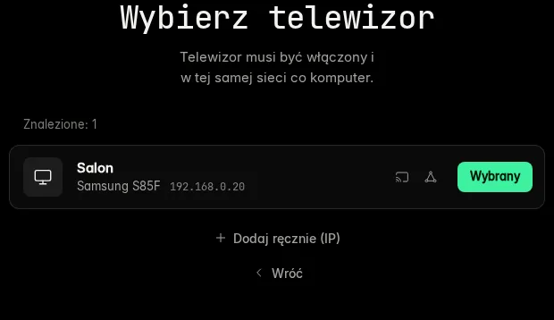
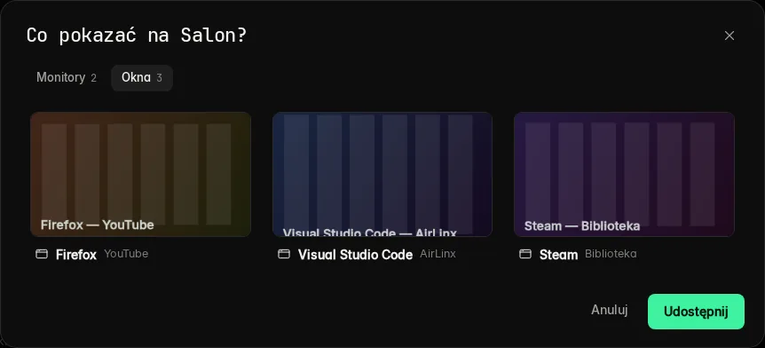
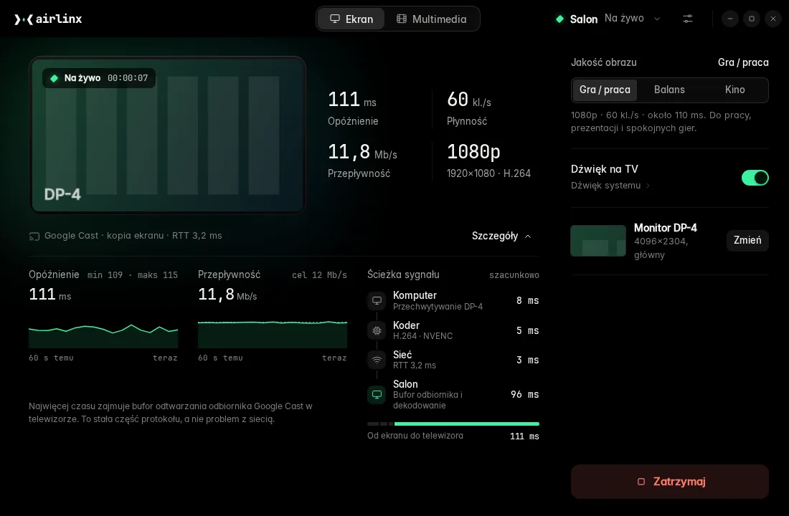
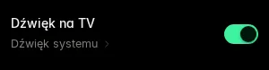
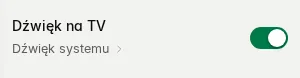

Obraz w locie.
Ekran z Linuksa na telewizorze. Kabel HDMI zostaje w szufladzie.
AirLinx wysyła cały monitor albo jedno okno, razem z dźwiękiem, na telewizor z Google Cast w Twojej sieci domowej. Filmy, muzykę i zdjęcia z dysku odtwarza na telewizorze, a na samym telewizorze nic nie instalujesz.
GNOME na X11instalacja do katalogu domowego, bez sudoGoogle Cast, zapasowo DLNA
Zmierzone liczby
-
111 ms
od ekranu do obrazu na TV
ok. 90 ms z tego to przetwarzanie w samym telewizorze
-
60 kl./s
stabilnie, w 1080p
0 utraconych klatek w pomiarze
-
12 Mb/s
przepływność obrazu
RTT sieci ok. 3 ms
-
240 ms
zmiana jakości w trakcie
sesja trwa dalej, restartuje się tylko koder
Zmierzone na Samsung S85F w sieci domowej, profil „Gra / praca”, dźwięk Opus 128 kb/s włączony.
Trzy kroki od uruchomienia do obrazu
-
Znajdź telewizor
AirLinx przeszukuje sieć lokalną i pokazuje telewizory z nazwą i modelem. Jeśli któryś się nie zgłasza, wpisujesz jego adres IP ręcznie.

-
Wybierz, co pokazać
Cały monitor albo jedno okno, z miniaturami podglądu. Przy dwóch monitorach wybierasz konkretny.

-
Udostępnij ekran
Jedno kliknięcie. Obraz pojawia się na telewizorze po 2,4–5,7 s, z czego większość to uruchamianie odbiornika w telewizorze. Przy pierwszym połączeniu telewizor może poprosić o zgodę na pilocie.

Monitor albo jedno okno, z liczbami na żywo
AirLinx przechwytuje wybrany monitor albo okno i wysyła je do telewizora jako kopię ekranu Google Cast. Kursor myszy jest widoczny. Kiedy przesuniesz udostępniane okno, obraz na telewizorze podąża za nim. Źródło zmieniasz w trakcie, bez rozłączania.
Podczas transmisji okno pokazuje to samo, co widzi diagnostyka: opóźnienie, kl./s, przepływność, rozdzielczość i RTT sieci, odświeżane dwa razy na sekundę. Panel „Szczegóły” rozkłada opóźnienie na etapy: przechwytywanie, koder, sieć, telewizor. Kiedy obraz się spóźnia, widać, czyja to wina.
Gdy połączenie zerwie się w trakcie, AirLinx ponawia je trzy razy, po 1, 2 i 4 s.
Trzy profile, zmiana bez zrywania sesji
| Profil | Obraz | Przepływność | Do czego |
|---|---|---|---|
| Gra / praca | 1080p · 60 kl./s | 12 Mb/s | pisanie, prezentacje, spokojne gry111 ms zmierzone |
| Balans | 1440p · 60 kl./s | 18 Mb/s | Eksperymentalny. Opóźnienia na telewizorze jeszcze nie zmierzyliśmy. |
| Kino | 4K · 30 kl./s | do 40 Mb/s | Eksperymentalny. AirLinx prosi telewizor o bufor co najmniej 400 ms, więc opóźnienie jest wyraźnie wyższe. Nie zmierzyliśmy go. |
Profil przełączasz w panelu obok podglądu. AirLinx restartuje wtedy tylko koder wideo (240 ms w pomiarze), a połączenie z telewizorem zostaje. Przepływność możesz ustawić ręcznie od 6 do 40 Mb/s, co pomaga przy słabym Wi-Fi.
Obraz koduje karta NVIDIA przez NVENC. Bez niej AirLinx przełącza się na koder procesorowy (libx264).
Dźwięk komputera z głośników telewizora
AirLinx nagrywa to, co gra na wyjściu systemowym (PipeWire albo PulseAudio), i wysyła to jako Opus 128 kb/s w tym samym strumieniu co obraz. Jeden przełącznik „Dźwięk na TV” wyłącza dźwięk, gdy wolisz zostać przy słuchawkach.


Filmy z dysku w jakości pliku
Przeciągnij pliki na okno albo dodaj je przyciskiem. Wideo, muzyka i zdjęcia trafiają do kolejki i grają po kolei. Na telewizor wysyłasz też adres URL.
Zanim plik poleci, AirLinx sprawdza go przez ffprobe i wybiera najlżejszą drogę:
telewizor zna format: plik idzie bez zmian, z przewijaniem;
telewizor zna kodeki, ale nie kontener: AirLinx przepakowuje plik w locie, bez ponownego kodowania. Tak trafia na Google Cast plik MKV;
telewizor nie zna kodeka: AirLinx koduje strumień na bieżąco (NVENC albo procesor).
Napisy tekstowe (SRT, ASS, WebVTT) działają z pliku obok filmu i ze ścieżek wewnątrz MKV. Ścieżkę wybierasz w trakcie odtwarzania. Pauza, przewijanie, głośność telewizora i następna pozycja są w oknie.
Sprawdzone na Samsung S85F: pliki MKV i MP4 przez Google Cast i przez DLNA.
Działa w tle, z ikoną w zasobniku
Zamknięcie okna chowa AirLinx do zasobnika, a udostępnianie trwa dalej. Z menu ikony zaczynasz i kończysz udostępnianie albo otwierasz okno. „Zakończ” zatrzymuje transmisję na telewizorze, zanim program się zamknie. AirLinx może startować razem z systemem, od razu schowany w zasobniku.
Łączy się tylko z telewizorem, który potwierdzi tożsamość
Przy połączeniu AirLinx prosi telewizor o podpis certyfikatem urządzenia Cast i sprawdza, czy łańcuch certyfikatów prowadzi do głównego urzędu Google Cast. Tożsamość telewizora trafia do pliku ~/.config/airlinx/known_tvs.json (uprawnienia 0600). Jeśli przy kolejnym połączeniu tożsamość się nie zgadza, AirLinx przerywa i pyta, czy zaufać temu telewizorowi ponownie. Na Samsung S85F weryfikacja przechodzi.
Kopia ekranu przez Google Cast jest szyfrowana AES-128, jak wymaga protokół Cast. Pliki i kopię ekranu przez DLNA telewizor pobiera z komputera zwykłym HTTP, bez szyfrowania, pod adresami z losowym tokenem, więc używaj AirLinx w sieci, której ufasz. Jeśli na telewizorze coś już leci, AirLinx najpierw pyta, czy to przerwać.
Konto nie jest potrzebne. Obraz, dźwięk i pliki z dysku idą wyłącznie między komputerem a telewizorem w Twojej sieci.
Ikona mówi, co się dzieje
Znak AirLinx to litera „x” rozcięta na dwa szewrony: komputer i telewizor. Romb między nimi to jedna klatka obrazu.
-
Gotowy. Szczelina pusta, nic nie leci.
-
Na żywo. Klatka jest w drodze.
-
Błąd. Coś stanęło w szczelinie. Okno mówi co, na przykład: „Utracono połączenie z telewizorem.”
Ta sama ikona siedzi w zasobniku GNOME, więc stan transmisji widać bez otwierania okna.
Na czym to działa
Komputer
- System
- Linux z GNOME w sesji X11. Testowane na Zorin OS 17.3 (baza Ubuntu 22.04).
- Wayland
- Nieobsługiwany. Kopia ekranu korzysta z narzędzi X11 (x11grab, xrandr, xprop). Na ekranie logowania wybierz sesję Xorg. W sesji Wayland AirLinx pokazuje ostrzeżenie.
- Karta graficzna
- Zalecana NVIDIA z NVENC (testowane: RTX 3080). Bez NVENC kopia ekranu, przez Google Cast i przez DLNA, koduje na procesorze (libx264), czego nie mierzyliśmy. Karty AMD i Intel trafiają na ten sam koder procesorowy.
- Dźwięk
- PipeWire albo PulseAudio z
pactl. - Zasobnik
- GNOME z obsługą AppIndicator / StatusNotifierItem (w Zorin OS i Ubuntu jest domyślnie).
- Python
- Systemowy Python 3 z PyGObject (GTK 3, WebKit2GTK 4.1). Testowane: 3.10.
Telewizor
- Google Cast
- Kopia ekranu, dźwięk i multimedia. Sprawdzone na Samsung S85F. Inne urządzenia z Google Cast nie były jeszcze testowane.
- DLNA (zapasowo)
- Filmy, muzyka i zdjęcia. Kopia ekranu przez DLNA jest strumieniem MPEG-TS z wyraźnie większym opóźnieniem (niezmierzonym). Pliki przez DLNA sprawdzone na Samsung S85F.
- AirPlay, Miracast
- Nieobsługiwane.
- Na telewizorze
- Nic nie instalujesz. AirLinx używa odbiorników wbudowanych w telewizor.
Sieć
Komputer i telewizor w tej samej sieci lokalnej (Wi-Fi albo kabel). Zapora musi przepuszczać wykrywanie urządzeń (mDNS, UDP 5353 i SSDP, UDP 1900) oraz połączenia od telewizora do komputera, bo telewizor sam pobiera pliki z AirLinx.
Instalacja w trzech poleceniach
Instalator kopiuje AirLinx do ~/.local, tworzy własne środowisko Pythona w ~/.local/share/airlinx/venv i dodaje program do menu aplikacji. Sam instalator nie potrzebuje sudo. Pakiety systemowe instalujesz raz, przez apt.
sudo apt install git ffmpeg python3-gi python3-venv gir1.2-gtk-3.0 gir1.2-webkit2-4.1 \
x11-xserver-utils x11-utils pulseaudio-utilsgit clone
cd AirLinx
./install.sh./install.sh --autostartairlinx # okno + ikona w zasobniku
airlinx --no-window # tylko zasobnikAlbo z menu aplikacji: „AirLinx”.
./install.sh --uninstallUstawienia zostają w ~/.config/airlinx.
Instalator pobiera biblioteki Pythona z PyPI (zeroconf, aiohttp, async-upnp-client, cryptography), więc przy instalacji potrzebny jest internet. Jeśli ~/.local/bin nie jest w PATH, instalator o tym powie.
Pytania
Czy AirLinx działa na Waylandzie?
Kopia ekranu nie, bo Wayland nie jest obsługiwany. AirLinx przechwytuje obraz narzędziami X11, więc potrzebujesz sesji Xorg (wybierasz ją na ekranie logowania). W sesji Wayland AirLinx pokazuje o tym ostrzeżenie. Odtwarzanie plików nie korzysta z przechwytywania ekranu, ale na Waylandzie go nie testowaliśmy.
Czy nada się do gier?
Do spokojnych tak. W profilu „Gra / praca” od ekranu do telewizora mija ok. 111 ms, z czego ok. 90 ms to przetwarzanie w samym telewizorze. Strategia, gry przygodowe czy granie na padzie z kanapy wchodzą w grę. Strzelanki sieciowe i gry rytmiczne lepiej zostawić na kablu HDMI.
Czy potrzebuję internetu?
Do instalacji tak (git i biblioteki z PyPI). Potem AirLinx rozmawia tylko z telewizorem w sieci lokalnej. Nie sprawdzaliśmy, czy telewizor uruchomi swoje odbiorniki Cast bez dostępu do internetu. Wyjątek: gdy dodasz do kolejki adres pliku z internetu, ten plik zostanie pobrany z serwera, który wskazałeś.
Co AirLinx wysyła poza moją sieć?
Nic o Tobie. W kodzie nie ma telemetrii, kont użytkowników ani połączeń z serwerami autora. Z internetem AirLinx łączy się tylko wtedy, gdy dodasz do kolejki adres pliku z sieci. Kopia ekranu przez Google Cast jest szyfrowana, a pliki i kopia ekranu przez DLNA idą w sieci lokalnej zwykłym HTTP pod adresami z losowym tokenem. Sam telewizor po uruchomieniu odbiornika Cast może łączyć się z serwerami Google. Ustawienia i zapamiętane telewizory leżą w ~/.config/airlinx.
Mam iPhone'a w głowie. Czy to AirPlay dla Linuksa?
Robi to samo, czego oczekujesz od AirPlay: ekran i filmy na telewizorze, po sieci. Mówi przy tym protokołami Google Cast i DLNA, więc AirPlay i Miracast nie wchodzą w grę. Telewizor z Google Cast albo DLNA to właściwy odbiornik. Apple TV nim nie jest.
Nie mam karty NVIDIA. Zadziała?
Tak. Bez NVENC AirLinx sam przełącza się na koder procesorowy libx264, przy kopii ekranu przez Google Cast i przy zapasowej kopii przez DLNA. Nie mierzyliśmy, ile to kosztuje procesor i opóźnienie. Którego kodera AirLinx używa, widać w ustawieniach. Pliki, które trzeba przekodować, też zejdą na procesor.
Czy muszę coś instalować na telewizorze?
Nie. AirLinx korzysta z odbiorników, które telewizor ma wbudowane: aplikacji kopii ekranu Cast, odtwarzacza multimediów Cast albo odbiornika DLNA.